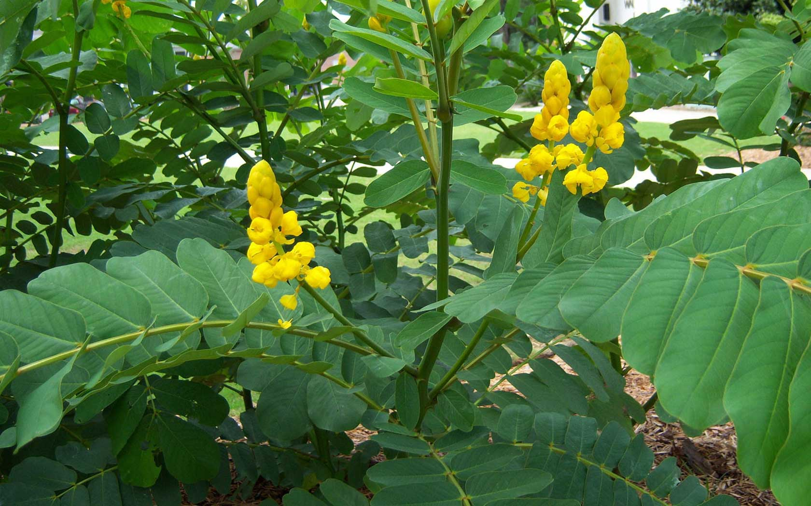

ชุมเห็ดเทศ
ไม้พุ่มขนาดกลาง มีดอกสีเหลือง จัดเป็นอีกหนึ่งสมุนไพรที่มีสรรพคุณทางยามาก โดยชุมเห็ดเทศทั้งต้น มีฤทธิ์ขับพยาธิในลำไส้ รักษาซาง โรคผิวหนัง ถ่ายเสมหะ รักษาอาการฟกช้ำบวม รักษาริดสีดวง ดีซ่าน และฝี ส่วนลำต้น จะใช้เป็นยารักษาคุดทะราด กลากเกลื้อน ช่วยขับพยาธิ ขับปัสสาวะ รักษาอาการท้องผูก นอกจากต้นแล้ว ใบชุมเห็ดเทศก็ได้รับความนิยมในคนที่มีอาการท้องผูกเช่นกัน เพราะสามารถนำใบซึ่งมีฤทธิ์เป็นยาระบายอ่อน ๆ ไปต้มน้ำกินได้ หรือจะใช้อมบ้วนปากก็ได้เช่นกัน อย่างไรก็ตาม ไม่ควรใช้ติดต่อกันเป็นเวลานาน เพราะจะทำให้ท้องเสีย ซึ่งส่งผลให้มีการสูญเสียน้ำและเกลือแร่มากโดยเฉพาะโปตัสเซียม รวมทั้งอาจทำให้ดื้อยาได้ด้วย
ใช้เมล็ดปลูก ปลูกง่ายในดินเกือบทุกชนิดโดยเฉพาะ ดินร่วนซุย ชอบน้ำและดินที่มีความชุ่มชื้นมาก ไม่ชอบที่ร่ม อาจปลูกโดยการเพาะกล้าก่อน หรือปลูกจากเมล็ดโดยตรงก็ได้
ดินร่วนซุย ชอบน้ำและดินที่มีความชุ่มชื้นมาก ไม่ชอบที่ร่ม
ต้น
รสเบื่อเอียน ใช้ขับพยาธิในลำไส้ ถ่ายพิษตานทรง รักษาซาง โรคผิวหนัง ถ่ายเสมหะ รักษาฟกบวม รักษาริดสีดวง
ดีซ่าน และฝี ใช้เป็นยารักษาคุดทะราด และกลากเกลื้อน
ขับพยาธิ และขับปัสสาวะ รักษาท้องผูก
และทำให้หัวใจเป็นปกติ
ใบ รสเบื่อเอียน จะมีกลิ่นฉุน ต้มน้ำกินเป็นยาระบาย อมบ้วนปากและใช้เป็นยาฆ่าพยาธิตามผิวหนัง ผิวหนังอักเสบเป็นผื่นคันเส้นประสาทอักเสบ รักษากษัยเส้น ขับปัสสาวะและรักษากระเพาะอาหารอักเสบ บดผสมกระเทียมหรือน้ำปูนใสทาแก้กลาก เกลื้อน โรคผิวหนัง ฝีและแผลพุพอง
ดอก รสเอียน ใช้เป็นยาระบาย ยาถ่าย บรรเทาอาการท้องผูก ถ่ายพยาธิลำไส้
เมล็ด รสเอียนเบื่อ แก้พยาธิ เป็นยาระบาย ขับพยาธิตัวตืด พยาธิไส้เดือน
เก็บใบที่ไม่อ่อนและไม่แก่เกินไป ต้องเก็บก่อนออกดอก ส่วนดอกที่ใช้ ใช้ดอกสด นำไป แปรรูปบรรจุภาชนะที่สะอาด ปิดฝาให้สนิท